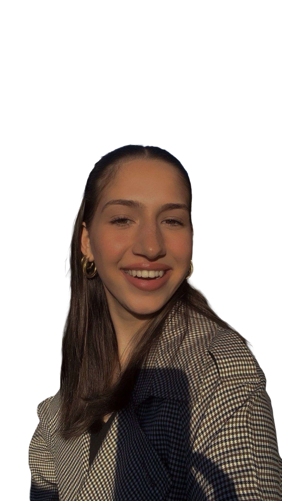

Bekijk hier de laatste aflevering
Het Openbaar Vervoer
In deze aflevering duiken we in het fenomeen van telefoongebruik in de trein. Als je om je heen kijkt, lijkt iedereen in zijn eigen digitale bubbel te zitten. Waarom vermijden we oogcontact en kiezen we massaal voor onze schermen? is het een vorm van ontsnappen, of simpelweg een nieuwe sociale norm?
Over ons
Wij zijn Saar en Chiara en wij hebben de podcast Ik Zie Ik Zie Wie Jij Niet Ziet gemaakt!, een podcast waarin we bespreken wat we dagelijks zien om ons heen, eigelijk gewoon mensenkijken! Meer over ons te weten komen? lees hieronder meer!
Chiara
Chiara is 17 jaar oud en doet op dit moment de studie Communication and Multimedia Design aan de Hogeschool van Amsterdam. Chiara is echt enthausiast en creatief. Chiara vindt het onderwerp intressant, omdat ze elke dag in het openbaar vervoer zit en ook elke dag wel iets meemaakt.
Saar
Saar is 19 jaar oud en doet op dit moment de studie Communication and Multimedia Design aan de Hogeschool van Amsterdam. Saar is echt enthausiast en creatief. Saar vindt het onderwerp intressant, omdat ze elke dag in het openbaar vervoer zit en ook elke dag wel iets meemaakt.